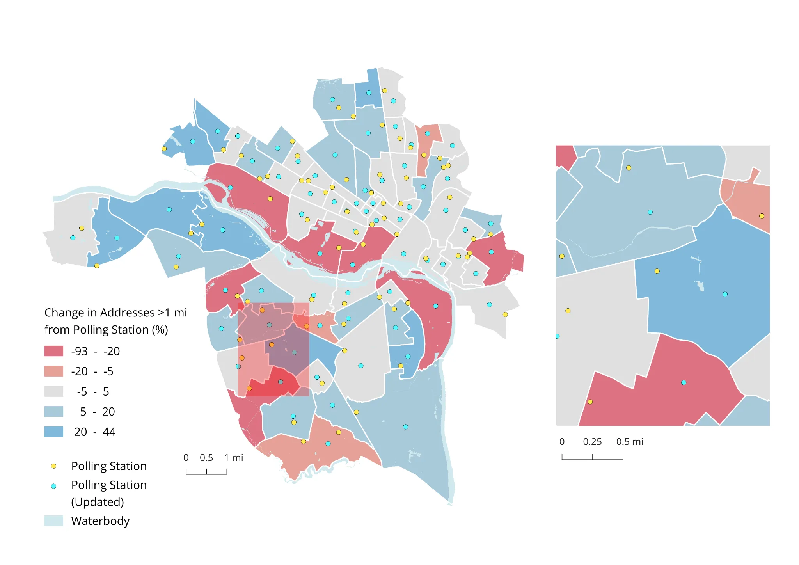

投票所への行きやすさを見直す
投票所の場所を変えたら、リッチモンドの人たちは投票しやすくなるのか。

QGISを使い、投票所まで1マイル以上ある住宅の割合を地区ごとに調べた。車を持たない世帯も重ね、徒歩での距離に注目した。
投票所の位置を変えて比べると、40地区で行きやすくなり、15地区では逆に遠くなった。1マイル以上離れた住宅の平均割合は22.9%から21.2%に減った。場所を変えることは役立つが、どこでも同じ結果になるわけではない。
投票所の場所を変えたら、リッチモンドの人たちは投票しやすくなるのか。

QGISを使い、投票所まで1マイル以上ある住宅の割合を地区ごとに調べた。車を持たない世帯も重ね、徒歩での距離に注目した。
投票所の位置を変えて比べると、40地区で行きやすくなり、15地区では逆に遠くなった。1マイル以上離れた住宅の平均割合は22.9%から21.2%に減った。場所を変えることは役立つが、どこでも同じ結果になるわけではない。